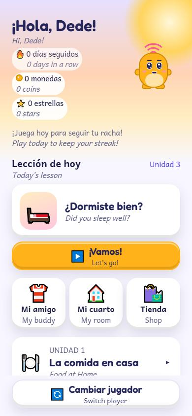
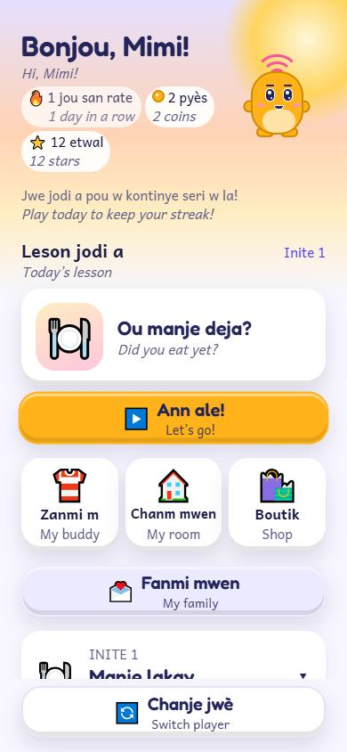
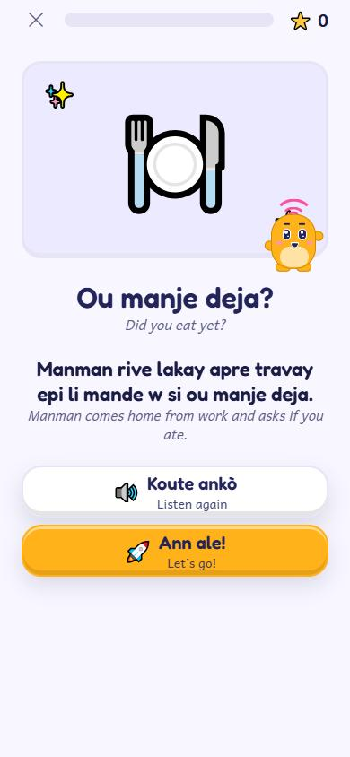
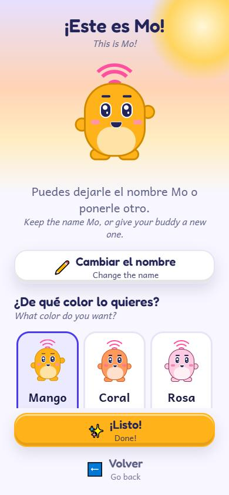
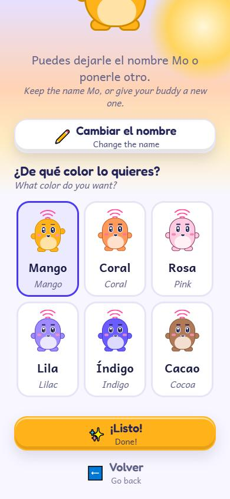

Habla Panyòl pou timoun ki gen rasin panyòl
80 leson sou manje lakay, fanmi, lekòl, santiman, jwèt, sòti ak fèt. Li aksepte mo ak aksan chak rejyon: meksiken, amerik santral, karayib ak amerik disid.
Tradiksyon sa a poko revize pa moun ki pale kreyòl natif natal.

FamilySpeak se yon aplikasyon pou timoun 6 a 12 an ki grandi ap tande panyòl oswa kreyòl ayisyen lakay yo, men ki reponn an anglè. Ti leson chak jou sou lavi lakay fè yo pale, li, epi koze ak granmoun yo.
Patisipe nan tès la




Chak timoun gen pwòp lang fanmi l. Si fanmi w pale plizyè lang, ou ka chwazi yon kou diferan pou chak timoun.
80 leson sou manje lakay, fanmi, lekòl, santiman, jwèt, sòti ak fèt. Li aksepte mo ak aksan chak rejyon: meksiken, amerik santral, karayib ak amerik disid.
80 leson sou lavi fanmi ayisyen: diri ak pwa, soup joumou, Kanaval, legliz, mache, ak koze ak Grann ak Granpè. Moun ki pale kreyòl ayisyen natif natal pral revize chak fraz anvan lansman an.
Nou ap chèche fanmi ki gen timoun 6 a 12 an ki pale panyòl oswa kreyòl ayisyen lakay pou eseye FamilySpeak sou iPhone ak Apple TestFlight. Li gratis pandan tès la.
Pou paran. Nou kenbe imèl ou, laj timoun ou yo (janm non yo), lang fanmi w ak si ou gen yon iPhone, sèlman pou fè tès la epi voye envitasyon w. Règ konfidansyalite
Èske fanmi w pale yon lòt lang lakay? Di nou kiyès. Chak demann konte pou chwazi pwochen kou nou pral fè.
Pou paran ak granmoun. Nou kenbe lang ou chwazi a epi, si ou ban nou l, imèl ou, sèlman pou di w lè li pare. Règ konfidansyalite